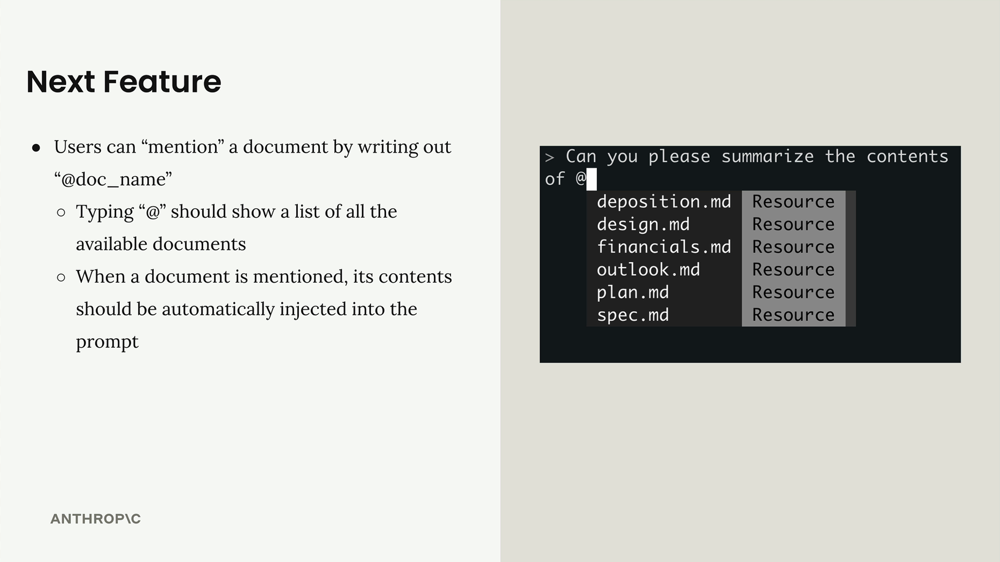
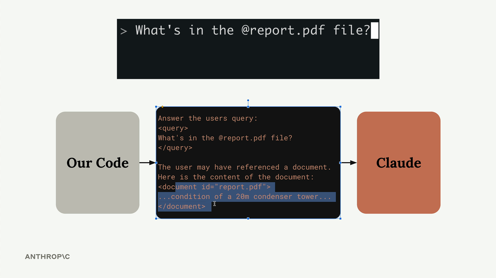
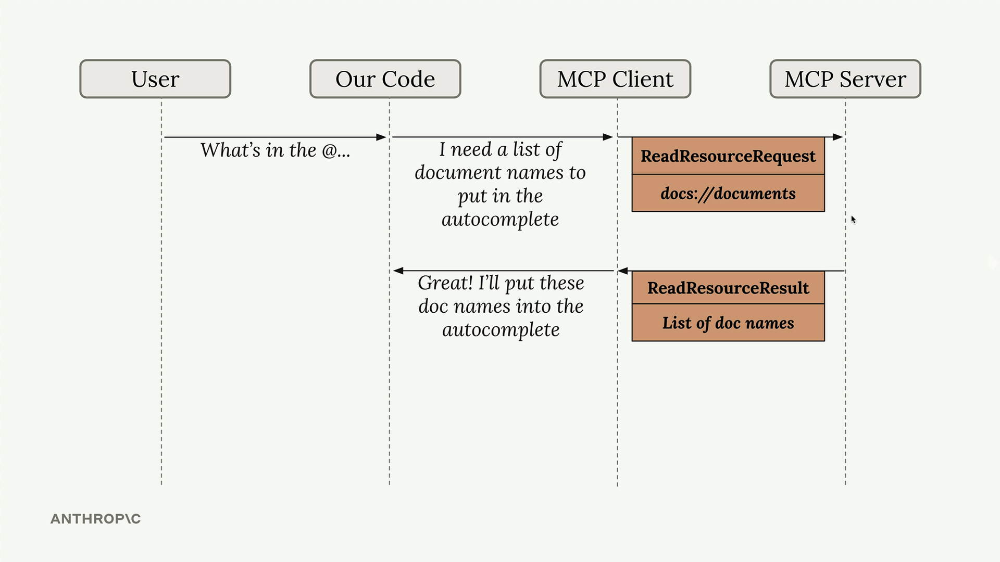
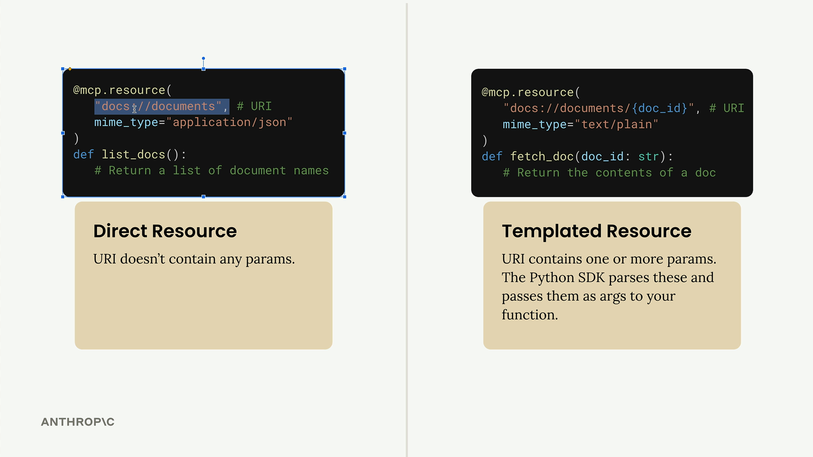
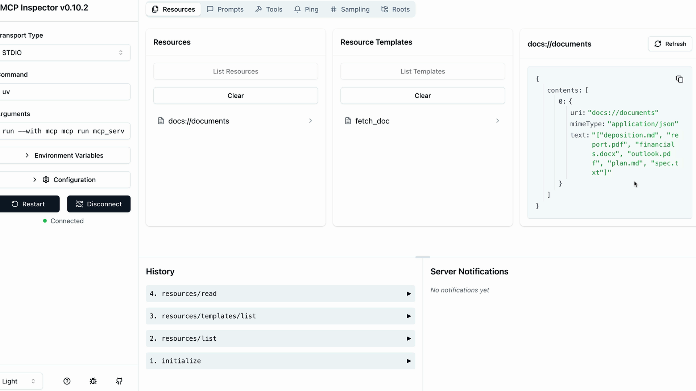

Ресурсы
Чему научитесь
Видео 9:45 и текст урока
К концу урока вы сможете:
- объяснить, зачем нужны ресурсы и как клиент читает их через
ReadResourceRequest; - создавать прямые и шаблонные ресурсы декоратором
@mcp.resource; - задавать
mime_typeи проверять ресурсы в MCP Inspector.
Видео и текст урока.
Смотреть урок на Skilljar Defining resources · 9:45Ресурсы (resources) в MCP-серверах позволяют отдавать данные клиентам — примерно как обработчики GET-запросов в обычном HTTP-сервере. Они идеально подходят там, где нужно получить информацию, а не выполнить действие.
Ресурсы на примере
Допустим, вы хотите сделать упоминание документов: пользователь пишет @document_name, чтобы сослаться на файл. Для этого нужны две операции:
- получить список всех доступных документов (для автодополнения);
- получить содержимое конкретного документа (когда его упомянули).

Когда пользователь упоминает документ, ваша система автоматически подставляет его содержимое в промпт, который уходит Claude, — и Claude уже не нужно вызывать инструменты, чтобы добыть эту информацию.

report.pdf в промпт для Claude.Как работают ресурсы
Ресурсы работают по схеме «запрос — ответ». Когда клиенту нужны данные, он отправляет ReadResourceRequest с URI, который указывает, какой ресурс нужен. MCP-сервер обрабатывает запрос и возвращает данные в ReadResourceResult.
ReadResourceRequest с URI docs://documents и ответ ReadResourceResult со списком имён документов.Путь запроса такой: ваш код запрашивает ресурс у MCP-клиента, а тот пересылает запрос MCP-серверу. Сервер разбирает URI, запускает нужную функцию и возвращает результат.

Типы ресурсов
Ресурсы бывают двух типов.
Прямые ресурсы
У прямых ресурсов (direct) статический URI, который никогда не меняется. Они идеальны для операций, которым не нужны параметры.
@mcp.resource(
"docs://documents",
mime_type="application/json"
)
def list_docs() -> list[str]:
return list(docs.keys())
Шаблонные ресурсы
В URI шаблонных ресурсов (templated) есть параметры. Python SDK автоматически разбирает их и передаёт в вашу функцию как именованные аргументы.
@mcp.resource(
"docs://documents/{doc_id}",
mime_type="text/plain"
)
def fetch_doc(doc_id: str) -> str:
if doc_id not in docs:
raise ValueError(f"Doc with id {doc_id} not found")
return docs[doc_id]

{doc_id}.Детали реализации
Ресурс может возвращать данные любого типа — строки, JSON, двоичные данные и т. д. Чтобы подсказать клиентам, какие данные вы возвращаете, используйте параметр mime_type:
"application/json"— для структурированных данных;"text/plain"— для обычного текста;"application/pdf"— для двоичных файлов.
MCP Python SDK автоматически сериализует возвращаемые значения. Вручную превращать объекты в строки JSON не нужно: просто верните структуру данных, а сериализацию SDK возьмёт на себя.
Проверка ресурсов
Ресурсы можно проверить в MCP Inspector. Запустите сервер командой:
uv run mcp dev mcp_server.py
Затем подключитесь к инспектору в браузере. Вы увидите два раздела:
- Resources — список прямых (статических) ресурсов;
- Resource Templates — список шаблонных ресурсов.

docs://documents: список имён приходит строкой JSON в поле text.Нажмите на любой ресурс, чтобы проверить его. Для шаблонных ресурсов понадобится указать значения параметров. Инспектор показывает точную структуру ответа, которую получит клиент, включая MIME-тип и сериализованные данные.
Ресурсы — аккуратный способ отдавать с MCP-сервера данные только для чтения: клиенты легко получают информацию без сложностей, связанных с вызовом инструментов.
Дальше
Следующий урок — «Чтение ресурсов»: научим клиент запрашивать ресурсы у сервера, разбирать ответ по MIME-типу и подставлять документ прямо в промпт.
Оригинал урока: Defining resources.